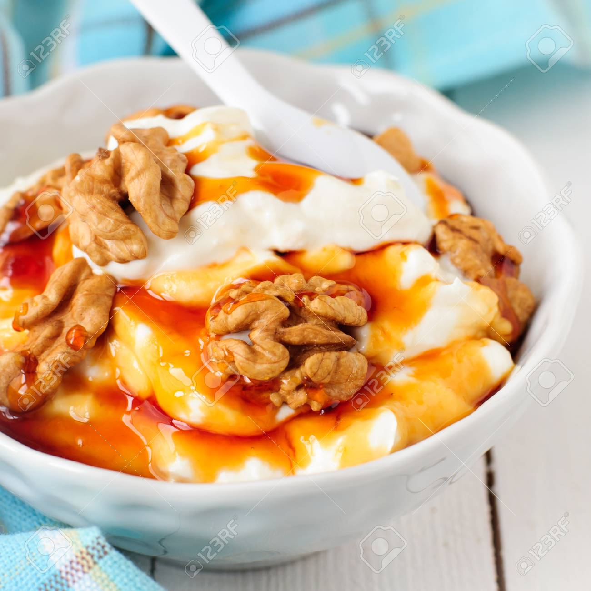

Ingredientes
- 500g de yogurt natural espeso.
- 4 cucharadas de miel.
- 1 taza de fruta fresca (Como podría ser el mango, la fresa, la piña o la sandía).
- ¼ de tazas de granola
Procedimiento
Colocar en recipientes pequeños una base de yogur natural, agregar una capa de fruta fresca (mango, fresa, piña o sandía) cortadas en pedazos pequeños, para luego verter una cucharada de miel encima. Y por último, añadir la granola sobre el yogur y la fruta picada.
Imagen de Referencia
